Using SWYFT Link
Connect to the right Cyclone, configure a mechanism, run a controlled test, and understand what the app reports.
SWYFT Link uses the same main pages for USB-C and SystemCore: Control, Config, Health, Firmware, Console, and Docs. Start with the connection you are using below, then follow the setup and testing steps. Install & connect covers the SystemCore package and the live USB-C website.
The screenshots below come from the app’s simulator and show example devices and readings. They explain the controls, not factory settings or measured motor performance. Your connected controller determines which fields are available. A greyed-out or unsupported field cannot be made functional by copying a simulator value.
USB-C or SystemCore?
| USB-C from your laptop | SystemCore on your robot | |
|---|---|---|
| Open the app | Open SWYFT Link in Google Chrome. | Open the installed SWYFT Link tile on SystemCore. |
| Connection | A USB-C data cable reaches one Cyclone. | SystemCore reaches the Cyclones on the robot’s CAN bus through their CAN FD interfaces. |
| Choose a motor | Select its serial port in Chrome. The app opens that device directly. | Choose the intended motor from Devices; switch motors using the sidebar. |
| Power for motion | Connect a 12 V FRC battery through a fused or breaker-protected power connection. USB alone handles settings and firmware updates. | Power SystemCore and the Cyclones from the robot’s battery and power distribution. |
| Driver Station | Not needed for standalone testing before CAN is connected. Once a robot signal has been received over CAN, USB motion requires live Driver Station permission until the Cyclone is power-cycled. | Keep Driver Station disabled while configuring. Enable it for a motor test, along with ENABLE in SWYFT Link. |
| Good uses | An off-robot test, a quick check before CAN wiring is finished, settings, and direct firmware updates. | Identifying and configuring installed motors, testing mechanisms, reading measurements, and updating over the robot CAN bus. |
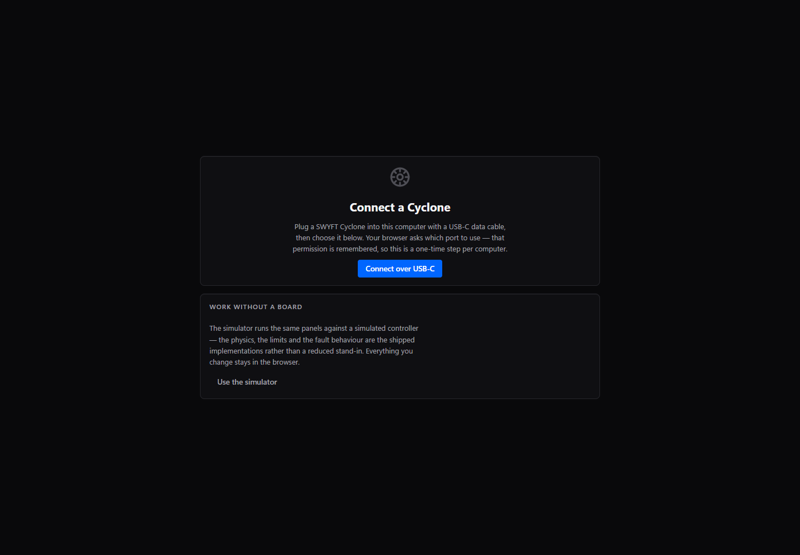
Connect over USB-C
- Use a data-capable USB-C cable and open the live site in Chrome.
- Select Connect over USB-C, choose the Cyclone serial port, and allow the connection. Close other serial monitors or app tabs that are using that port.
- Check the device name, CAN ID, and firmware in the header. Use Identify to flash the physical motor’s end lights.
- If you only need settings or a firmware update, USB power is enough. Before running the motor, connect its protected 12 V battery supply and check the voltage reading.
Connect through SystemCore
- Power the robot and connect your laptop to SystemCore. Open its SWYFT Link tile.
- Find the intended motor on Devices. A card shows its name, CAN ID, firmware, and recent measurements.
- Use Identify before opening a control session. Select Quick Config for common settings without leaving Devices, or open the device for the full pages.
- Check the device header again after switching motors. A matching name alone is less useful than confirming the physical motor with Identify.
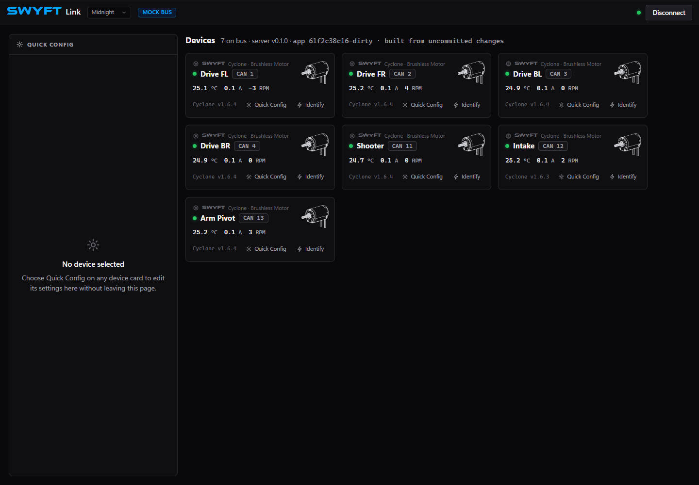
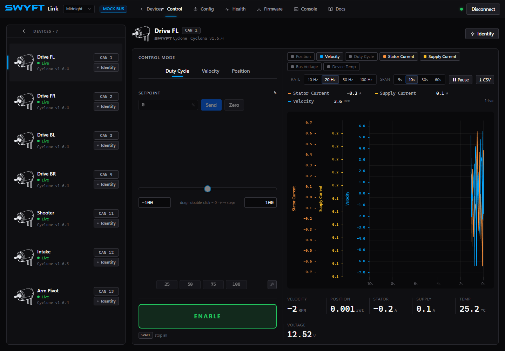
Enable, stop, and work safely
ENABLE is permission to produce output; the setpoint is the requested motion. Start at zero, secure the motor or mechanism, and keep the stop control within reach. On SystemCore, the app’s enable is bus-wide, so check all connected mechanisms before enabling. Use one source of motor commands at a time: robot code and the app must not compete for the same motor.
| Action or condition | What it means |
|---|---|
| DISABLE | Stops the app’s output requests and returns its setpoint to zero. A disabled motor can coast; do not assume it will hold an arm or elevator. |
| Spacebar | Stops all app-controlled outputs when keyboard focus is outside an input, select box, or editable text. While typing in a field, Space is typing, so use DISABLE. |
| Changing browser tabs | The app stops outputs when its tab becomes hidden. Return to the app, check the mechanism, then enable and enter the intended setpoint again. |
| Disconnect / closing the page | Stop with DISABLE first. Closing the page sends a best-effort stop, and the controller also checks command freshness. Do not use closing the browser as your normal stop procedure. |
| Driver Station disabled | SystemCore motion is blocked. Standalone USB-C testing does not need Driver Station; USB connected to a robot receiving a CAN robot signal still respects it. |
| Unavailable ENABLE or Apply | Check the app’s message, connection, Driver Station state when applicable, and Health. Do not repeatedly click or increase the target to work around a refusal. |
When testing off the robot, secure the motor just as you would an installed mechanism. When testing an arm or elevator, support the load and plan for loss of power. Coast/Brake is not a mechanical holding brake. See the first USB-C run for a complete short test.
What happens when control is lost?
These checks run on the Cyclone in firmware 0.169.1 and newer, so stopping does not depend on the browser successfully sending a final command.
| Situation | Controller response |
|---|---|
| Driver Station disables robot output | Stops robot-controlled output when the disabled robot signal is processed. USB-C control on that robot follows the same permission. |
| Robot heartbeat, commander heartbeat, or CAN motion commands stop arriving | CAN control requires all three. A missing required refresh stops output at the 100 ms freshness limit, on the next control-loop check. An unplugged CAN connection therefore cannot leave the last command running. |
| USB-C cable is removed, the serial port closes, or the computer suspends USB | The USB loss callback stops USB-controlled output. Removing a monitoring laptop does not interrupt a motor controlled over CAN. |
| The USB app freezes while its cable remains connected | The app refreshes its drive request every 50 ms. Firmware stops output when no accepted drive command has arrived for 250 ms, on the next control-loop check. Reading measurements does not keep a motion command alive. |
| A connection recovers | After DS disables, SystemCore SWYFT Link remains disabled until you click ENABLE again, even if DS has already re-enabled. Firmware 0.169.1 remembers the disable between status reports. Robot code must first return to neutral while enabled; a held target cannot resume. After a USB command timeout or USB control loss, stop and deliberately enable again before sending a new target. SWYFT Link confirms the stop as part of enabling. |
Loss of control coasts the motor, including an active Brake command. Removing electrical output does not instantly stop a spinning shaft or support a suspended load. Support arms and elevators mechanically before working on them.
Once the Cyclone has received a robot heartbeat or universal disable, unplugging CAN does not turn it into a standalone USB motor. For an off-robot USB test, stop output, support the mechanism, disconnect robot CAN, and fully power-cycle the Cyclone, including USB power, before reconnecting for the test.
Control: request motion
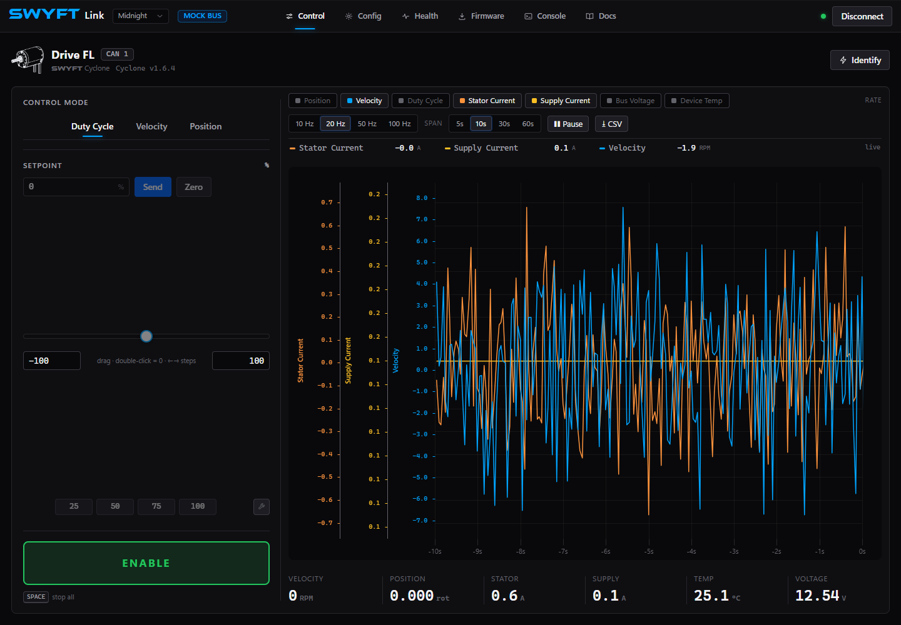
| Mode | What to enter in the app | When to use it |
|---|---|---|
| Duty Cycle | Percent: 10 means 10%; a negative value reverses the requested direction. Java uses fractions instead: 0.10 means 10%. | A basic direction check, intake, feeder, or other output-percentage test. Duty does not hold a requested speed as load changes. |
| Velocity | Motor-shaft RPM, as shown next to Setpoint. | A flywheel or other mechanism that should maintain a speed. Check the selected gains, current limits, and measured speed. |
| Position | Motor-shaft rotations, as shown in the app. The Java setPosition method instead takes rotor radians. | A referenced position test. Establish home and configure position gains before commanding travel; a restart can invalidate the reference. |
Run a first duty test
- Check the motor identity, battery voltage, and accepted current limits. Select Duty Cycle with the setpoint at zero.
- Enable Driver Station if using SystemCore, then select ENABLE in the app.
- Type a small request, such as 10 in the percent field, and choose Send. The slider also changes the request while enabled. Watch direction and measured speed.
- Select DISABLE and confirm the mechanism stops as expected before another test. If it did not move, read the refusal or fault before raising the request.
Zero sends a zero setpoint; it is not the same as DISABLE. In Position mode, zero is a target position and can cause a move toward the reference. Use DISABLE to stop output. Mode changes return the request to neutral; enter the new target deliberately.
The slider’s minimum and maximum set its adjustment range. They are not mechanism travel switches or controller protection limits. Preset buttons send their displayed setpoint when enabled; use the edit button to change those shortcuts. They are convenience values, not recommended motor outputs. Position has a typed target because its useful range depends on the mechanism.
Acceleration and cruise speed
A motion profile changes the requested speed gradually. Acceleration controls how quickly the speed request changes; Cruise Velocity caps the speed requested during a position move. A short position move may finish before reaching that speed. The motor still follows its current limits and protection settings.
These controls are on the Control page when Velocity or Position is selected. Both USB-C and SystemCore CAN support these controls with firmware 0.167.0 and the current app. Use the current app and firmware before following these steps.
| Mode and field | Unit and accepted app range | After a restart |
|---|---|---|
| Velocity: Acceleration | 1,910–572,957 RPM/s | Saved automatically after the controller confirms the change and the save succeeds. |
| Position: Acceleration | 10–190,985 RPM/s | Resets. Set it again for the next session. |
| Position: Cruise Velocity | 10–7,639 motor-shaft RPM | Resets. Set it again for the next session. |
RPM/s means RPM gained or lost each second. For example, a requested acceleration of 5,000 RPM/s takes about 0.6 seconds to change a speed request from zero to 3,000 RPM. Actual motor motion depends on the load, gains, available voltage and current limits. This example explains the units; it is not a recommended setting for every mechanism. The accepted upper values are software bounds, not a motor speed or acceleration rating.
- Select DISABLE. Choose Velocity or Position and wait for the fields to read the controller’s current values. The two modes have separate acceleration settings.
- Enter the intended acceleration and press Enter or move focus out of the field. In Position, set Cruise Velocity as well. Start with a short move away from the mechanism’s travel ends.
- Wait for confirmation. The app reads the setting back; a typed number alone does not confirm a change. Small rounding differences are normal because the controller stores acceleration in different units and the displayed RPM is rounded.
- If the app reports an error, read it before continuing. For example, 500 RPM/s is below the Velocity mode minimum, even though Position mode accepts it. If saving fails, a value may have changed for this session without being retained after restart.
- When the setup is ready, enable using the normal procedure and run the test. Compare speed, current and voltage, then disable before changing the setup again.
Unknown means the app has not confirmed that setting. Check the connection and use Read settings again if it appears after an error. Switching modes or reconnecting reads the settings again. Position settings take effect for this session; Save to Flash on Config does not make them persistent.
Graphs: compare request and response
Duty Cycle reports the output percentage applied by the controller, including reductions from current limiting. It can differ from the request you entered. A lower applied value with current near its limit is a reason to inspect the load and limits before changing gains.
- Select signal chips above the graph. Start with Velocity and Duty Cycle for motion, then add Stator Current, Supply Current, or Bus Voltage to investigate load. Keep at least one signal selected.
- Choose a Span: a short window makes a start or stop easier to inspect; a longer window helps compare repeated cycles. Choose a Rate appropriate to the change you are studying. A faster requested graph rate does not guarantee new device measurements at that rate.
- Perform the same short test more than once. Compare the target you entered with measured motion, current, voltage, and temperature.
- Select Pause to stop the graph scrolling, then drag to zoom into part of the plot. Pause does not stop the motor or stop data capture. Use DISABLE first when the motion test is finished.
- Use CSV to download selected signals over the selected time span. Choose a long enough span and export promptly; the live data buffer keeps advancing even while the graph is paused.
A missing or unavailable signal is not a measured zero. If a chip explains that a signal is not sent by the controller, choose another measurement. A graph that reaches a current ceiling, a falling supply voltage, and a speed error tell different stories; do not solve all three by increasing PID gains.
Config: edit, apply, and save
Keep output disabled while changing motor settings. The full Config page groups identity, motor output, thermal settings, LEDs, closed-loop gains, and current limits. Some sections are commands or app preferences rather than saved motor settings.
- Select the correct device and open Config. Read the existing values before replacing them.
- Edit the intended fields. Most edits become a draft: the bottom bar shows the number of unapplied changes. A value typed into a box has not necessarily reached the motor.
- Select Apply. Check for a rejection next to the field or in the app’s message. Use the field’s revert arrow or Revert all to discard pending edits.
- After an accepted change, unburned means the setting has been applied but is not yet saved for a restart. Choose Save to Flash for settings you intend to retain.
- After the save completes, restart when convenient and check the reported settings again. flash in sync does not make a runtime-only setting persistent.
USB-C identity fields that the app saves automatically, such as name and CAN ID, commit when edited; they do not follow the same draft/apply sequence. After changing a CAN ID, wait for the device to return under its new number. For all connections, use the app’s reported result rather than assuming a click succeeded.
| Setting or group | How to use it |
|---|---|
| Identity | Give each Cyclone a unique CAN ID from 1 to 62. Use a useful name such as Intake or Arm Pivot where naming is supported. Update robot code to use the same ID. |
| Current Limits | Set stator current for motor torque/current demand and supply current for battery load. Accepted team ranges are 1–95 A stator and 1–40 A supply. These ceilings are not suggested settings. |
| Idle Mode: Coast / Brake | Coast allows free rotation; Brake resists rotation during applicable neutral operation. It does not hold a position or prevent a disabled mechanism dropping. The current neutral-mode setting is runtime-only; set it again after restart. |
| Thermal | Read warning, foldback, and cutoff fields as different functions. Foldback reduces allowable current; a thermal stop turns output off. The thermal-fold switch shows the controller’s reported state. After Apply, check that the switch stays at the intended state and that its unapplied change clears; use Save to Flash to retain a supported change. A displayed field may be read-only. Do not raise protection thresholds to hide binding, overload, or poor cooling. |
| Closed-Loop PID | Use the gain fields supported by the connected device. kP responds to present error, kI to accumulated error, and kD generally to how quickly error changes. Velocity kD adds damping from changes in measured speed; zero turns it off. See the tuning steps below. |
| Unsupported / grey fields | The connection or firmware may not support that write, or output may still be enabled. Read the field’s explanation. The current Java API also differs from app fields; a similarly named class member is not proof of support. |
Import, export, reboot, and reset
Export JSON saves the reported configuration as a file; Import reads a compatible exported file into pending changes for you to review and apply. Apply or revert existing edits before exporting, because an export is not a backup of unsubmitted typing. Review identity, direction, current limits, and gains before copying one motor’s settings to another; two motors must not end up with the same CAN ID.
Export console creates commands for the supported settings, ending with a save command. It is useful when SWYFT asks for a reproducible configuration, but is not a universal script for every connection or firmware. A settings export does not back up firmware or establish that every runtime option survives a restart.
Reboot Device restarts the controller. Disable output first and re-check runtime settings and position references afterward. Factory Reset restores configuration defaults; it is not the normal way to clear a fault. Export settings first and read the confirmation before using it.
Configure for your mechanism
Start by choosing the mode and defining the mechanism’s useful range, not by copying the largest current limit. Record the configuration and test with the actual gearing and load. The examples below describe a setup process; they are not qualified current recommendations for every robot.
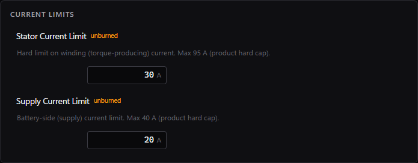
| Mechanism | App setup and first test | What to check before keeping it |
|---|---|---|
| Intake / feeder | Start with Duty Cycle. Confirm acquisition direction with a short, low-output run. In Config, apply the stator and supply limits selected for the mechanism, then test normal feeding. | Compare normal current with a jam. Your robot code needs a timed jam response or other deliberate stop logic; a current limit alone is not an automatic jam-clearing routine. |
| Shooter / flywheel | Verify direction first, then choose Velocity and a reachable RPM target. Tune the supported velocity gains using repeated spin-up tests at the same target. | Watch speed rise, overshoot, recovery after feeding, and voltage drop. If current limiting or low voltage prevents the target, increasing gains will not remove that restriction. |
| Arm / elevator | Support the load, verify direction, and establish a repeatable home. Configure position gains and begin with short Position moves away from travel ends. | Account for gearing: the app target is motor-shaft rotations, not arm degrees or elevator height. Check holding current, temperature, and what happens when disabled. Implement homing and travel limits in robot code. |
| Drivetrain / swerve | Test one motor’s physical direction before a group. Start with a supported robot and a small duty request; use Velocity only after feedback and gearing are understood. | Check left/right sign conventions, wheel motion, and battery voltage. Test combined loads after individual checks. For steering, establish the angle reference before position commands. |
A configuration trial, from edit to saved result
- Write down the current limits and define one test, such as feeding one game piece with an intake.
- Enter the intended stator and supply limits. The screenshot shows 30 A and 20 A only to demonstrate the fields. Choose the values for your mechanism’s design and electrical protection.
- Apply, then verify the reported values. Run the test with the same duty request and log current and voltage.
- If the test fails, disable and identify whether it is binding, hitting a current limit, or losing voltage. Change one setting or mechanical issue at a time.
- When the test performs as intended, Save to Flash, export the configuration, and verify it after a restart. Repeat under the combined loads the robot will use.
For more detail, see Limits by mechanism, tuning from measured response, and position reference and gearing.
Tune velocity kD
In Config, select the velocity loop (slot 0) and set kD. This requires firmware 0.165.0 or later and the updated app. Begin at zero after choosing kP and kI; use small increases only when repeated speed tests show a need for more damping. Keep output disabled while applying a gain, then repeat the same test and compare overshoot, settling, and output jitter.
kD uses changes in measured motor speed, filtered over 5 ms. A target change alone does not kick the derivative term. The accepted range is 0–0.001 duty per rad/s², in steps of 0.00000001. Apply checks the controller response; use Save to Flash to keep the gain after restart. These units differ from gains in an external WPILib controller. See the Java gain table and code.
Use a second motor as a follower
The Follower panel is a command, marked not saved, rather than a permanent mechanism setting. On a multi-device connection, choose the leader motor. Where the USB-C app offers entry by leader CAN ID, that leader must still be reachable on the motor’s CAN bus; the USB cable alone does not connect two motors.
- Configure both motors’ limits independently and verify their physical directions before coupling or loading them.
- Select the follower, choose the leader, and choose Aligned or Opposed to match the installation.
- With the mechanism ready and normal enable conditions satisfied, use Follow, then command the leader. Watch both motors.
- Do not send ordinary motion commands to the follower at the same time; a direct command cancels following. Re-establish following after a restart when needed.
Do not make followers follow each other or build a chain of followers. Following applied output does not guarantee equal shaft positions under different loads.
Set the five user LEDs
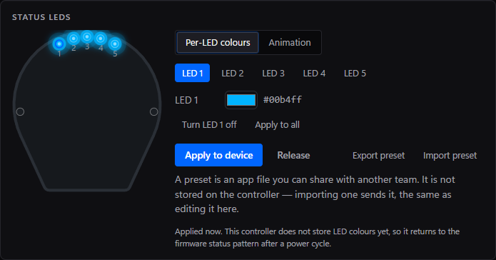
- In Config → Status LEDs, choose Per-LED colours and select LED 1–5 on the drawing or numbered buttons.
- Choose its colour. Use Apply to all to copy that colour across the five user lights, or select individual lights to make a pattern.
- Select Apply to device to send the result. For a moving pattern, select Animation, choose the animation and colour where applicable, then apply.
- Use Release to give the user lights back to the firmware. Export preset and Import preset share an LED pattern file; they do not copy motor control settings.
The two end lights cannot be overwritten by the user pattern. Check Status lights when diagnosing a motor. Animation movement pauses while driving; do not treat a paused decorative pattern as a communication failure. Reapply user lights after restart on firmware that does not retain them.
Health: readings, faults, and history
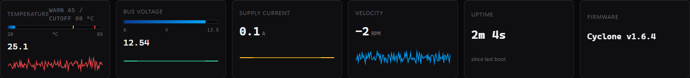
Use Health when the motor refuses a request, stops unexpectedly, or behaves differently under load. Compare the reading with the action you were taking: an idle voltage reading cannot explain every voltage drop during acceleration.
| Display | How to read it |
|---|---|
| ACTIVE fault | The app currently reports the condition. Resolve its cause before trying to clear it. |
| STICKY fault | The fault occurred and remains in stored history after the active condition went away. It helps diagnose an intermittent event. |
| Fault Event Log | Shows when fault states appeared or cleared during the session. Match the event time to the mechanism action or voltage/current change. |
| Refused command | The requested operation was not accepted, for example because output was enabled during configuration, a value was out of range, or another command source owned the motor. This does not always mean a hard fault. |
| No faults — device healthy | No active/sticky faults are listed by the app. If a command is still refused, inspect the refusal and enable conditions rather than assuming the empty list proves motion is permitted. |
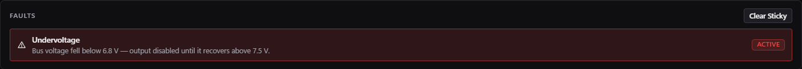
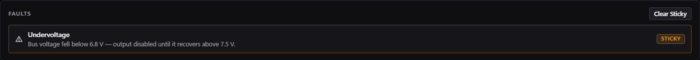
Clear a fault in the right order
- Select DISABLE and, on the robot, disable Driver Station. Record the exact message before clearing anything.
- Resolve the cause: check battery/power connections for voltage problems, let an overheated motor cool, or inspect the mechanism for binding.
- Choose Clear Sticky. “Clear sent” acknowledges the request; it does not promise that a still-active fault was cleared.
- Read the fault list again. If the same active condition remains, address it rather than repeatedly clearing. Release an emergency stop only after its cause is resolved.
- When the condition is resolved, perform a short controlled test and monitor whether it returns. Export the Console log for support if it does.
Where available, Re-zero Position sets the current shaft angle as the reference; it does not physically home an arm or recalibrate the electrical encoder. Only use it at a known, stopped position. Reset Peaks restarts peak-current measurements for a new test; it does not reset limits or fix a fault. Additional diagnostics vary with the controller and connection.
See the animated fault-light patterns and Faults & errors for cause-specific next steps. The simulator’s Test Bench can demonstrate faults without a motor; its injection controls are not controls for a real Cyclone.
Firmware: select, update, and confirm
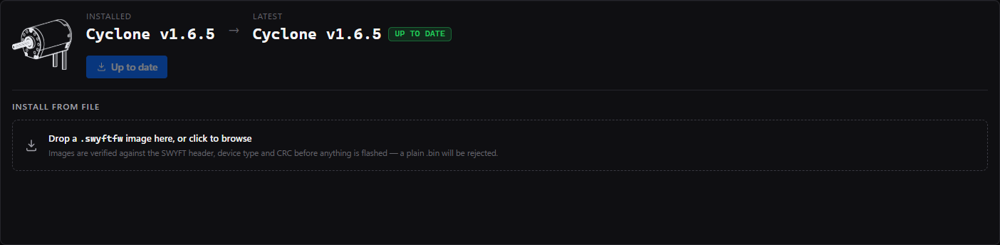
- Disable output and confirm the selected motor. For SystemCore updates, keep robot battery power on. USB-C can update using USB power alone.
- Compare Installed with Latest, the version offered by this app. If it says Up to date, there is no newer bundled image to install.
- Use the offered update, or choose an intended
.swyftfwfile in Install From File. A selected file takes precedence over the bundled image. The app checks the image before flashing; do not select an IPK, Java JAR, or ordinary BIN file here. - Select Update to …, read the confirmation, and select Flash Firmware. Keep power and the connection active while erase, write, verify, and reconnect finish.
- Wait for the app to confirm the expected firmware after restart. Re-check motor identity and settings before enabling. The end of writing alone is not completion.
Solid white end lights indicate the updater, not proof that it is still making progress. If the app reports failure, retain the exact message and follow update recovery. The DFU Button is not part of the normal update sequence.
Console: commands and useful logs
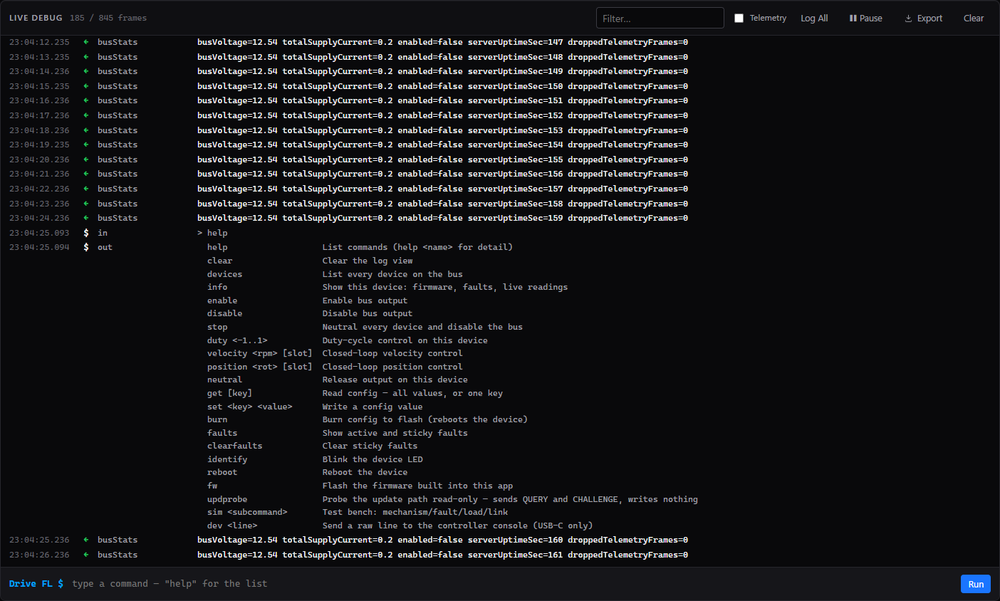
The Console is useful for understanding a refusal or sending SWYFT a record of what happened. It is not necessary for an ordinary first run. USB-C supports the device’s serial commands; SystemCore exposes the commands its CAN link can carry. Do not assume a command copied from a different connection has the same support.
- Use Filter to find relevant messages, such as a fault name or a device number. Enable Telemetry if you need measurement entries.
- Log All clears the filter and shows telemetry. Pause freezes the displayed stream; it does not stop the motor or stop recording.
- For a supported command, type it in the bottom field and choose Run. Start with
helpfor available commands. Keep output disabled while changing settings, and read the full response. - After a problem, select Export. It exports the persistent recording rather than just the visible filtered lines. Turn on Telemetry before exporting if you need those entries in the file.
- Include the device ID, firmware, connection type, and the action that triggered the problem when sending the file to SWYFT Support.
Clear clears the on-screen log; it is not the same as Clear Sticky on Health and does not clear a motor fault. Recording depends on browser storage, so read any recording error before relying on an export. A console that cannot record is not evidence that the controller produced no events.
Docs and the simulator
Docs opens this guide inside either app. Internet access is needed to load the documentation. The colour-theme selector changes appearance, not motor settings.
Use the simulator lets students learn the tabs, graph controls, configuration workflow, and fault display without hardware. The MOCK BUS badge means the values are simulated. Simulator settings do not configure a real motor, and a successful simulated test does not qualify a mechanism. Disconnect from the simulator and choose the real connection before working on your Cyclone.